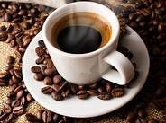
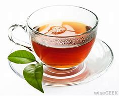
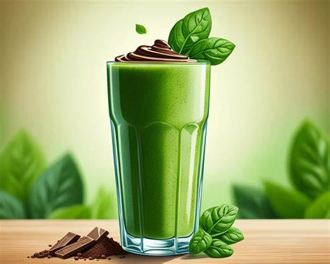
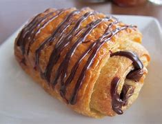
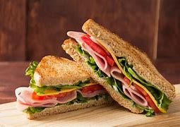
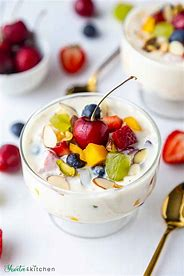

Our Menu
Beverages
- • Coffee
Freshly brewed coffee, perfect for starting your day or a midday pick-me-up. You can offer brewed coffee, espresso drinks, and iced coffee options.
- 
- • Tea
A selection of hot teas to relax and unwind. Indicate what kind of teas you offer, like black, green, herbal, or spiced.
- 
- • Smoothies
Made with fresh fruits and yogurt, our smoothies are a healthy and refreshing treat. Mention any unique flavors or health benefits you offer.
- 
Food
- • Pastries
We offer a variety of delicious pastries, perfect for a sweet treat alongside your coffee or tea. Briefly mention what kind of pastries you offer, like croissants, muffins, cookies, or scones.
- 
- • Sandwiches
Our sandwiches are made with fresh bread and quality ingredients, a delicious and satisfying option for lunch or a snack. Briefly mention what kind of fillings you offer, like meat, cheese, or vegetarian options.
- 
- • Salads
Our salads are a light and healthy option, perfect for a quick meal. You can mention if you offer pre-made salads or build-your-own options.
- 